Swami Ayyappa Song Collection
Songs for the devotee's journey, in Kannada and Tamil, with lyric videos. Listen, light a deepam, and climb the eighteen sacred steps. Swamiye Sharanam Ayyappa 🙏
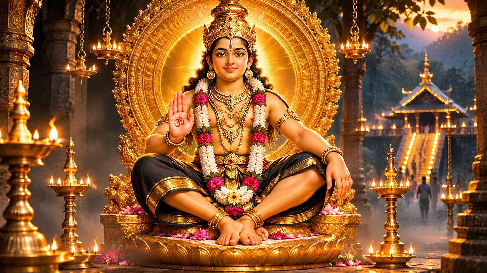
The songs
More songs, in more languages, will join the collection through the season.
Ayyappa season games
Free, in English, ಕನ್ನಡ, தமிழ் and తెలుగు. Press play and our Ayyappa song plays in a small window while you play. Every game starts with a short how-to-play.
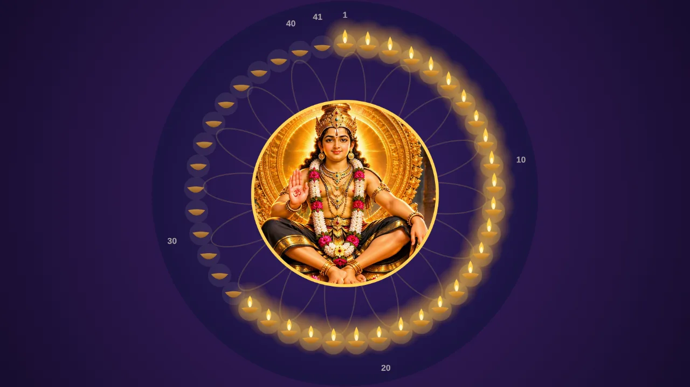
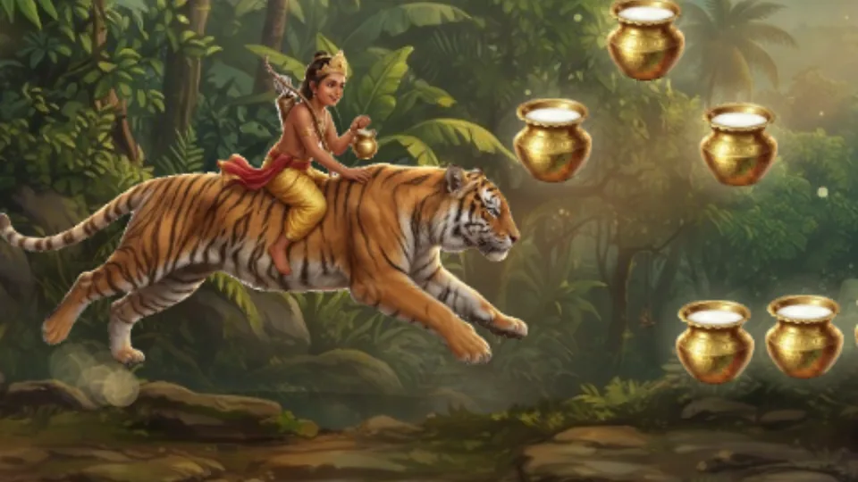


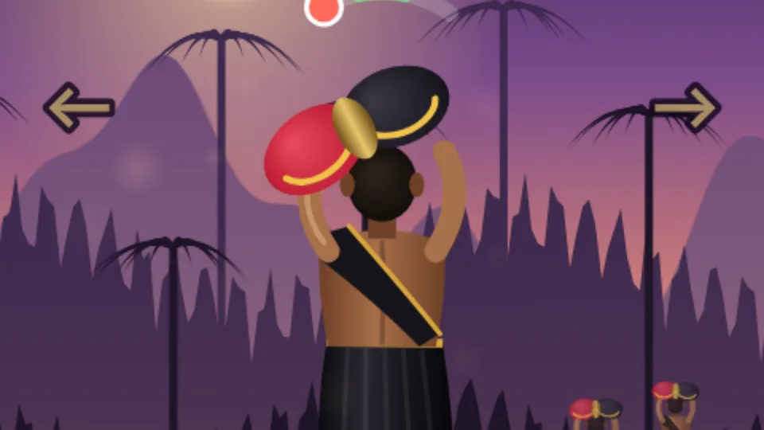
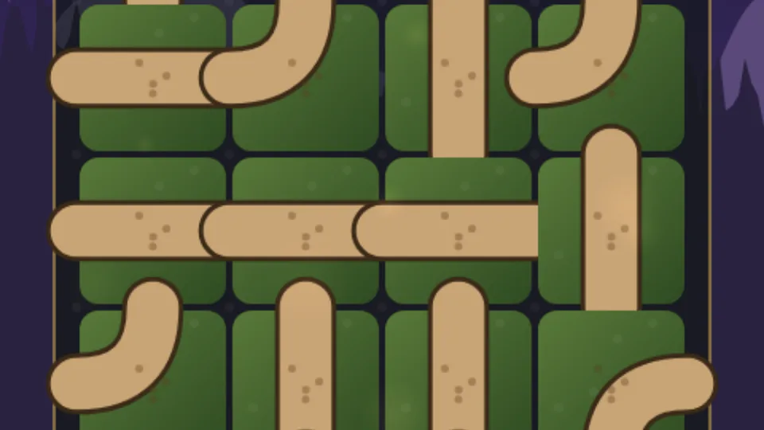
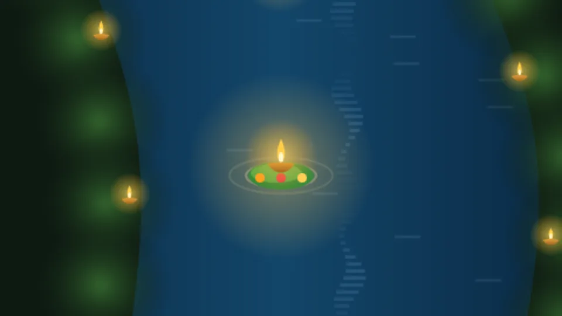
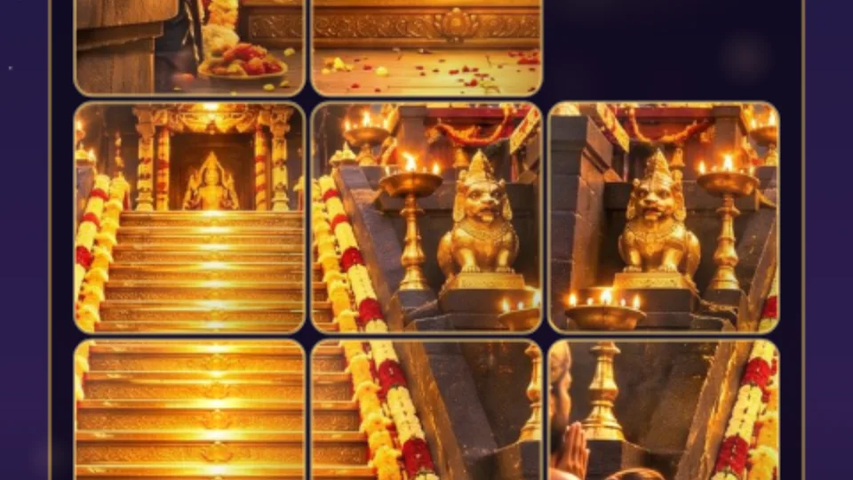
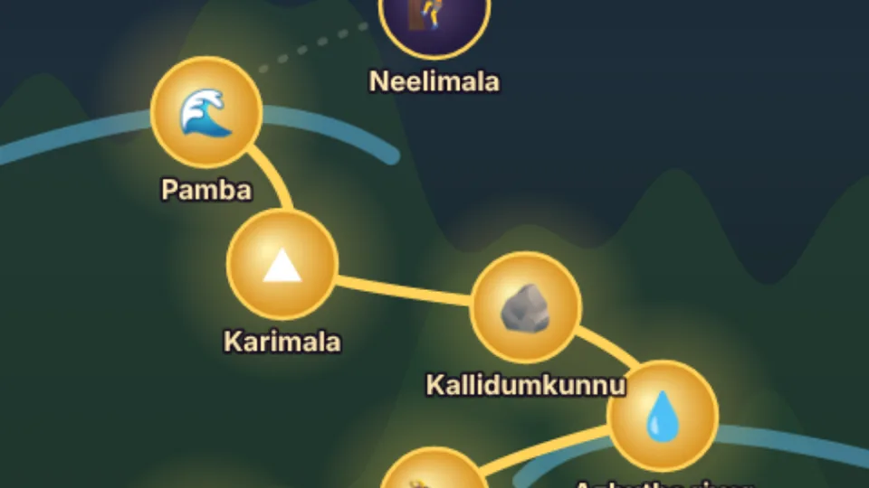
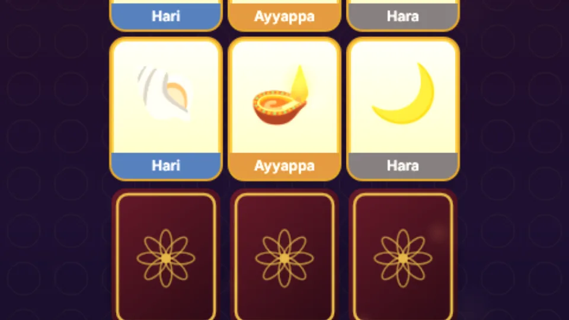
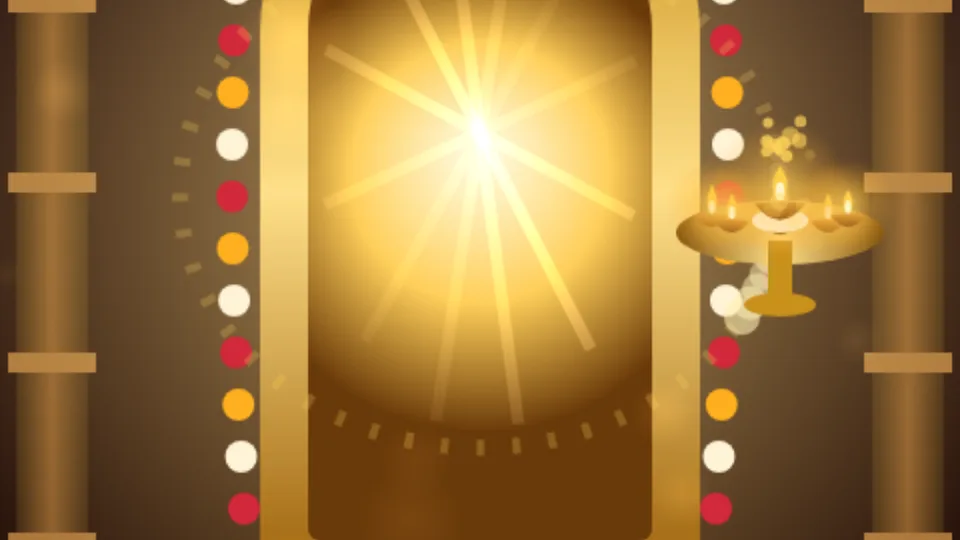
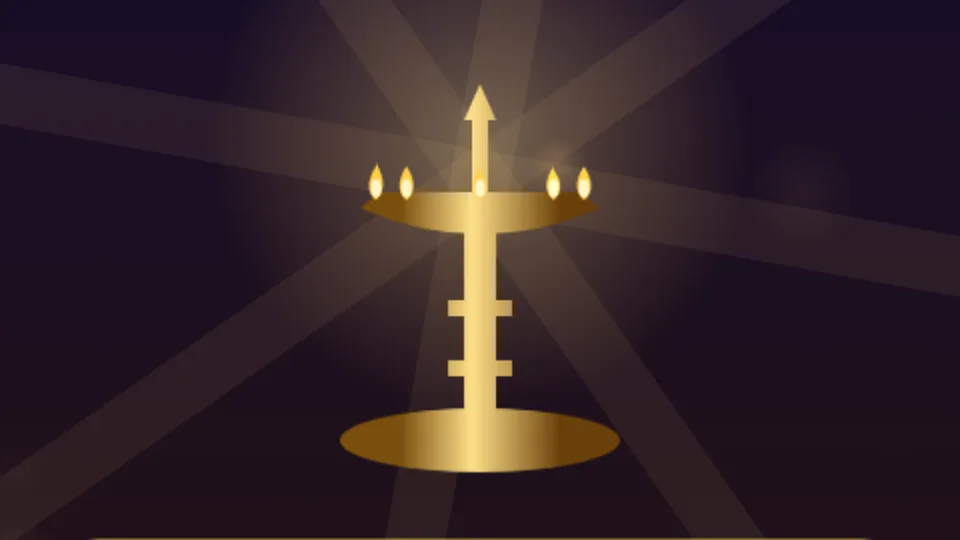
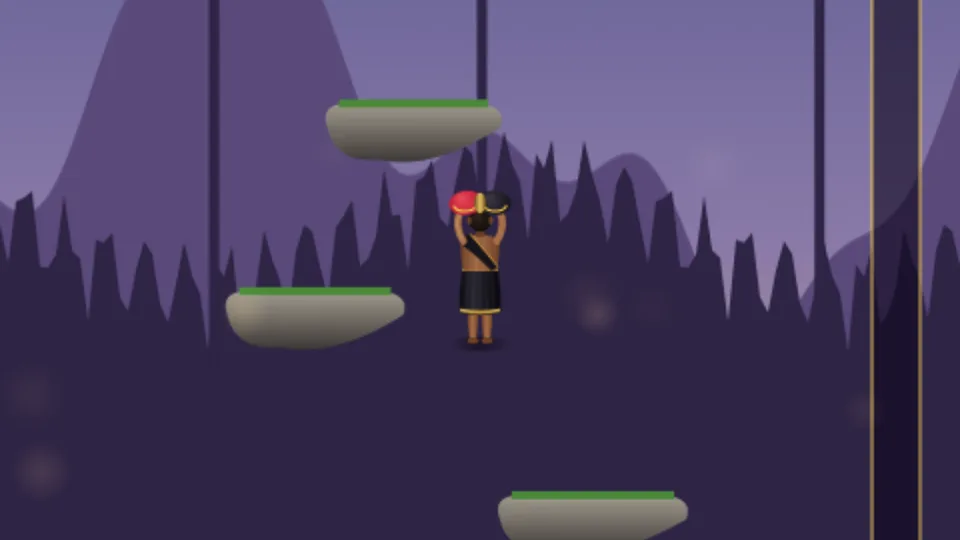
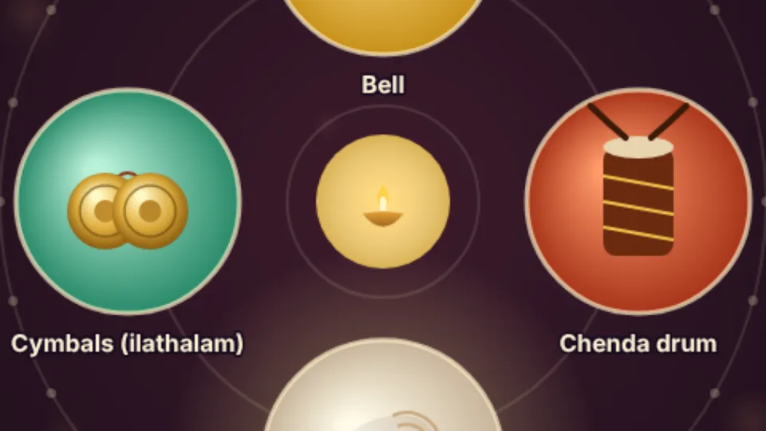
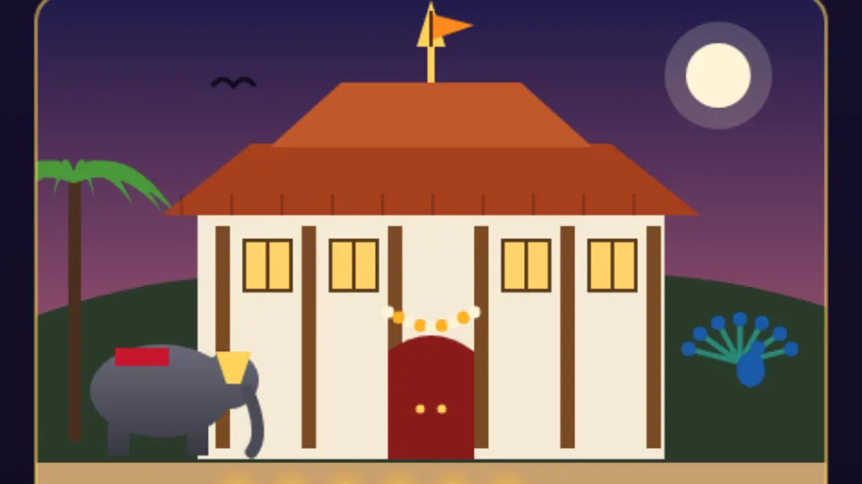
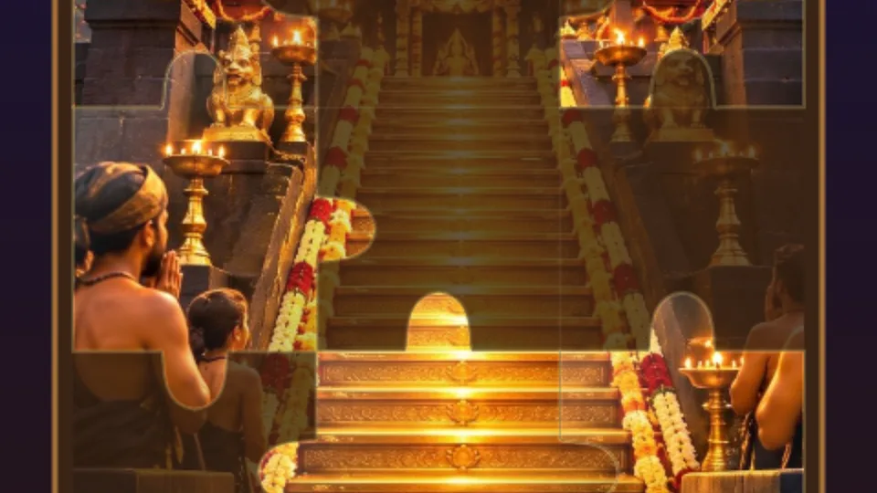
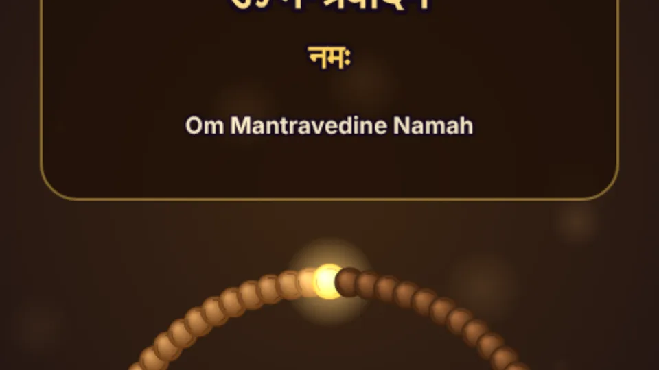
Pathinettam Padi Yatra: 18 steps, 18 songs, 18 games
- Our swami waits at the foot of the steps. Tap the glowing step he is to climb next.
- Do one thing for that step: ▶ listen to its song to the end (tap the bell 🔔 with the beat while it plays), or 🎮 play its game.
- The step lights up and the swami climbs one step. One song or one game for each step, in order. New songs and games join every week.
Light a deepam for Swami
Take one quiet breath and say: Swamiye Sharanam Ayyappa.
Subscribe, like and share
New Ayyappa songs, in more languages, arrive through the Sabarimala season. Subscribe so you never miss one, like the videos you love, and share them with fellow devotees.